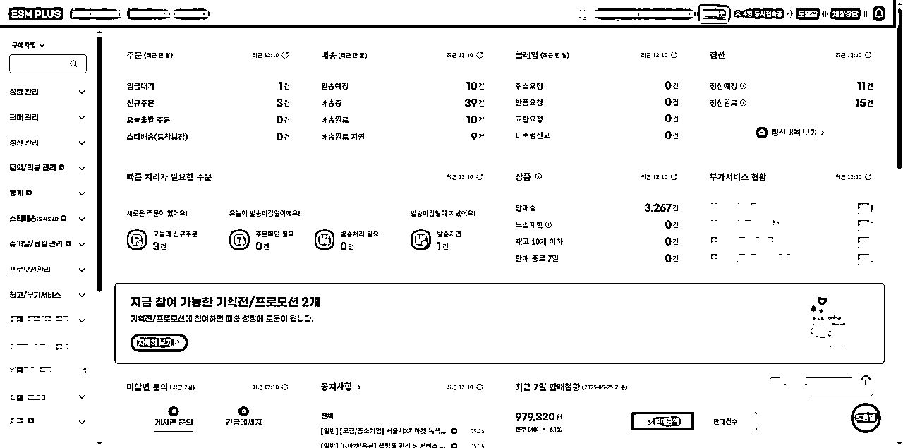
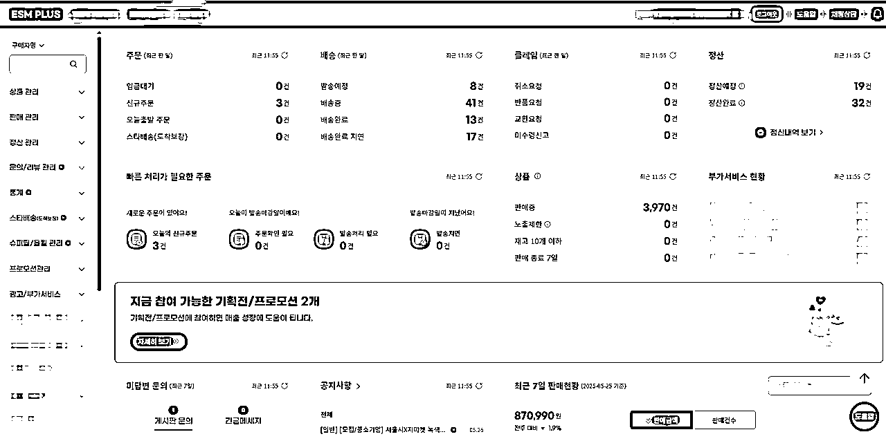
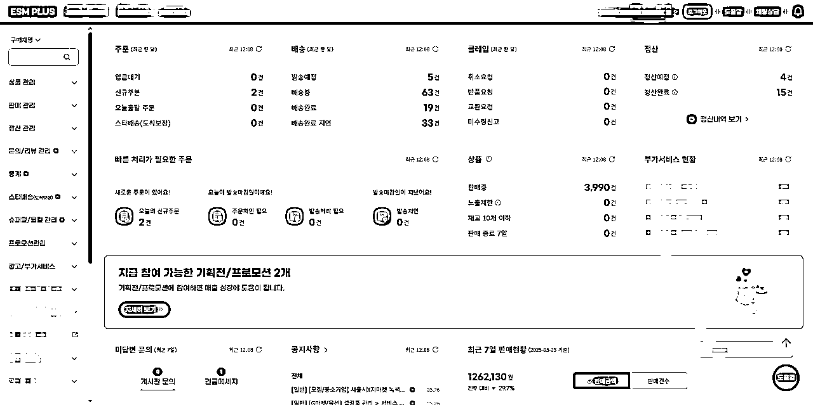

来源：https://zwl0d6izlw5.feishu.cn/docx/S1FmdrbWsoIYApx9mAoceFQjn2g
新手必须先做 Gmarket 单店，我们要用一个店铺做出来一个MVP出来，有了第一个最小可行产品之后我们才可以继续用于放大。所以大家先不要着急扩张，你什么时候把月销做到500w韩币再去考虑放大的事情。
店铺入驻：要准备企业营业执照，法人身份证，第三方收款账户凭证，电子邮件，这四样东西必须在开始前就要准备好。我们详细来说，这个企业营业执照之前不能注册过gm店铺，而且你要每个月得按时报税，不能出现经营异常，如果出现经营异常gm可能会封禁你的店铺，所以在公司经营层面尽量不要任何问题，现在入驻都是Gmarket&Auction两个店铺一起下店，保证金是两个店铺3000人民币。
基础市场认知：我直接放给大家，大家多了解一下韩国市场，对我们进行未来的工作就很有帮助，大家也可以多找一些关于韩国市场介绍，越是了解消费者我们的生意才会越好。
店铺下店及选品上品：关于 Gmarket&Auction 下店准备，这里有个关键时间节点必须卡死 —— 平台下店周期平均 7 个工作日，而这 7 天恰恰是决定你能否抓住「黄金推流期」的核心筹备期！划重点：下店后平台会开启7 天免费推流机制，但推流的底层逻辑是「店铺权重决定曝光量」，而权重高低直接与入选推流池的商品数量挂钩。
选品数量决定成败
✅ 平台逻辑：Gmarket 算法判定「商品池丰富度」是店铺活跃度的核心指标，入选推荐的商品每增加 10 个，店铺基础权重提升 3%，曝光量阶梯式增长；
✅ 实战数据：我们测试过两个学员店铺，A 店下店前准备 1600 款商品，7 天推流期内 798 款进入类目曝光池，首周订单破90单，利润率在35%左右；B 店仅上 30 款商品，推流期仅 2款获得曝光，最终因流量不足导致权重崩盘，一周出了2单。
低估「铺品数量门槛」：以为「选几款精品就行」，结果推流期因商品池空空如也，被算法判定为「低活跃店铺」，直接打入流量冷宫；
误判权重积累速度：Gmarket 权重采用「动态评分制」，前 30 天是权重爬坡关键期，推流期商品数量不足，后续需花 3 倍精力才能挽回。
记住：Gmarket 的流量机制是「马太效应」—— 推流期商品数量越多，后续流量获取成本越低；反之，若错过这 7 天窗口期，店铺将陷入「无流量→无转化→权重暴跌」的恶性循环。下店不是起点，而是「与时间赛跑」的真正开始，直接把「下店以后马上铺品 1500 款+」设为死任务，这是新手破局的最低门槛。所以我们必须在下店前完成1500个产品的选品任务。
选品口诀：聚焦韩国供应链薄弱、中国卖家具备成本优势的类目，卡准 “高毛利 + 高复购 + 高热搜 + 小体积” 四大指标。
前台扒数据：去前端一直下翻到四级类目，四级类目里面去找同行的品去做微创新或者跟卖。或者说，举个例子，比如搜 “주방수납”（厨房收纳），筛选价格11000-20500（占销量 68%），看 TOP50 竞品差评：“密封性差”“尺寸小” 是高频词。
差异化突围：
✅ 绝对禁区：Line Friends、BT21 等卡通形象，三星 / LG 专利产品（如折叠屏手机配件），LG 的 “ThinQ” 智能系列、现代汽车周边产品等等，太多了，需要的联系我
✅ 擦边球风险：韩国设计师品牌 “Studio Concrete” 联名款需授权，韩星同款需取得肖像权授权等
当你花半个月时间完成选品上品、陆续出单后，最容易卡壳的环节非发货莫属！这段时间我们被学员问爆的问题里，80% 都和物流有关 —— 别慌，今天一次性把坑填了。
✅ 必问 3 个报价：
✅ 必查资质：
✅ 必备服务：
最后提醒：货代不是一次性选择，建议同时合作 2-3 家（一家主走普货，一家走敏感货），遇到爆单或渠道拥堵时能快速切换。
经过前 15 天的选品上架和流量测试，第 3 周开始进入「利润收割关键期」。这时候比拼的不是流量规模，而是「流量转化效率」和「成本控制能力」。我们总结出 售后降本 + 数据驱动 + 用户留存 三大核心策略，学员实测能让利润率提升 20% 以上，真正实现从 “出单” 到 “稳赚” 的跨越！
采购不到
你好，之前的供货商发来的商品质量有问题，所以我们正在寻找新的供货商。如果不方便继续等待我会帮你全额退款处理。
안녕하세요 고객님!
죄송합니다 ,제품 지금 없어졌습니다,다른제품 선택하고,아니면,환볼해 부탁드립니다
联系邮箱
不好意思，请提供一下照片，我们检查后会为你申请售后处理。
发送时请把订单号一起提供，方便我们进行核对，保证可以准确的处理你的订单。
我的邮箱是
안녕하세요 고객님!
발생된 현상으로 불편을 드려 대단히 죄송합니다. 관련 스크린샷이나 동영상을 제공해주시면 검토 후 A/S 신청해드리겠습니다.
메일로 보내하실 때 주문번호도 함께 제공하시길 바랍니다. 이렇게 하면 저희가 대조할 수 있고 주문을 정확하게 처리할 수 있습니다.
제 메일주소는
XXXXXX@naver.com
그럼 회신 기다리고 있겠습니다.
좋은 하루되시길 바랍니다.
감사합니다.
退货
很抱歉，我们一般不回收商品。 如果商品没有质量问题，不符合预期，可以退还15000韩元作为补偿。希望大家能理解~
안녕하세요 고객님!
발생된 현상으로 불편을 드려 대단히 죄송합니다. 고객님의 기대에만 부응하지 못하지만 상품에 품질 문제가 없는 것이라면 보통 저희는 상품을 회수하지 않습니다. 대신에 보상으로 3000원을 고객님한테 환불 돌려 드리는 게 가능합니다. 이해해 주시길 바랍니다~
그럼 다른 문의가 있으실 경우 언제든 문의해주시길 바랍니다.
좋은 하루되시길 바랍니다.
감사합니다
剪碎退款
안녕하세요 고객님!
발생된 현상으로 불편을 드려 대단히 죄송합니다. 고객님이 상품을 사용할 수 없게 자르는 사진을 제공하시면 전액 환불 돌려 드리겠습니다.이해해 주시길 바랍니다.
그럼 다른 문의가 있으실 경우 언제든 문의해주시길 바랍니다.
XXXXXXX@naver.com
좋은 하루되시길 바랍니다.
감사합니다
① 快速响应：设置 Shopee 聊聊自动回复，30 分钟内触发 “客服正在处理” 消息，避免买家因等待超时给差评（实测差评率下降 40%）
② 分级补偿：
③数据复盘：每周导出客诉报表，TOP3 问题直接优化详情页（如 “色差” 问题多，增加 10 张不同光线下的产品图；“尺寸不符” 问题多，补充韩文尺码对照表）
✅ 3 个核心指标筛选法：
✅ 复制三原则：
这部分太难了，以后再说吧。
第 15-30 天的精细化运营核心策略已全部拆解完毕 ——售后降本、数据驱动、用户留存，这三步看似独立，实则环环相扣：售后处理决定了利润 “底线”，数据驱动决定了盈利 “效率”，用户留存则决定了增长 “天花板”。这第15 天是从 “流量测试” 到 “稳定盈利” 的转折点，当你能精准控制这三个环节，店铺将进入 “高转化→高权重→高复购” 的正向循环。
至此，《单店铺月销 500万 +！「从 0 到 30 天跑通项目闭环」》已完整呈现 —— 从第 1 天的注册到第 30 天的精细化运营，我们拆解的不是 “爆单神话”，而是 130 家店群实战打磨出的「可复制闭环」。这里，你学会的不是简单的后台操作，更是一套 “数据驱动选品 - 流量精准收割 - 利润细节把控” 的跨境电商底层逻辑。
附上我小白学员的后台鼓励一下大家吧！祝大家早日迈出第一步！


